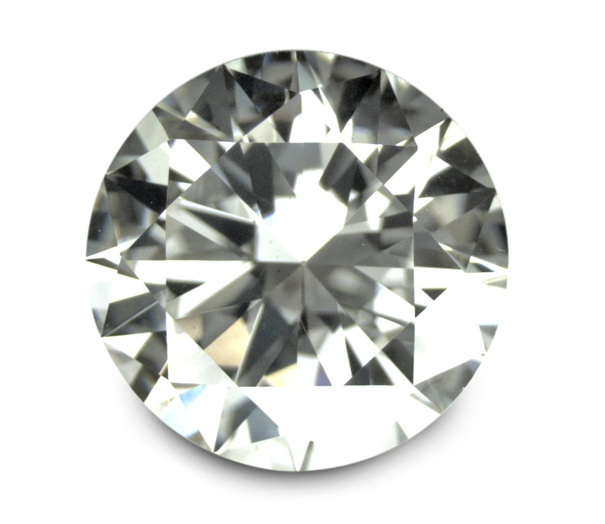
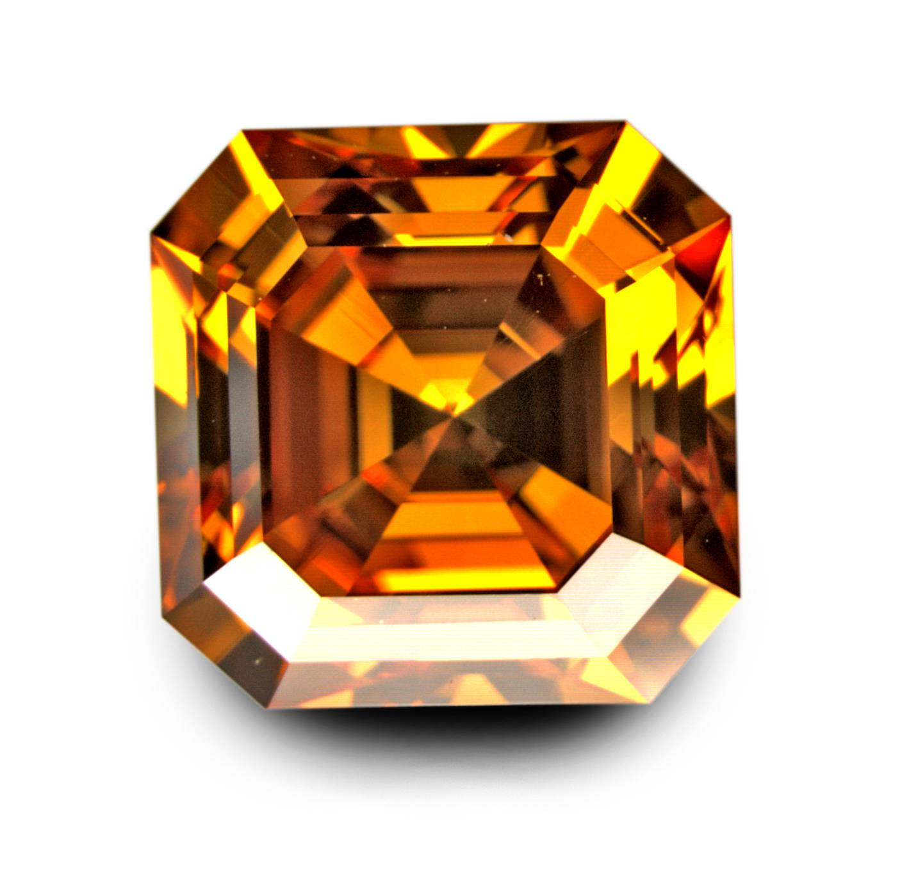
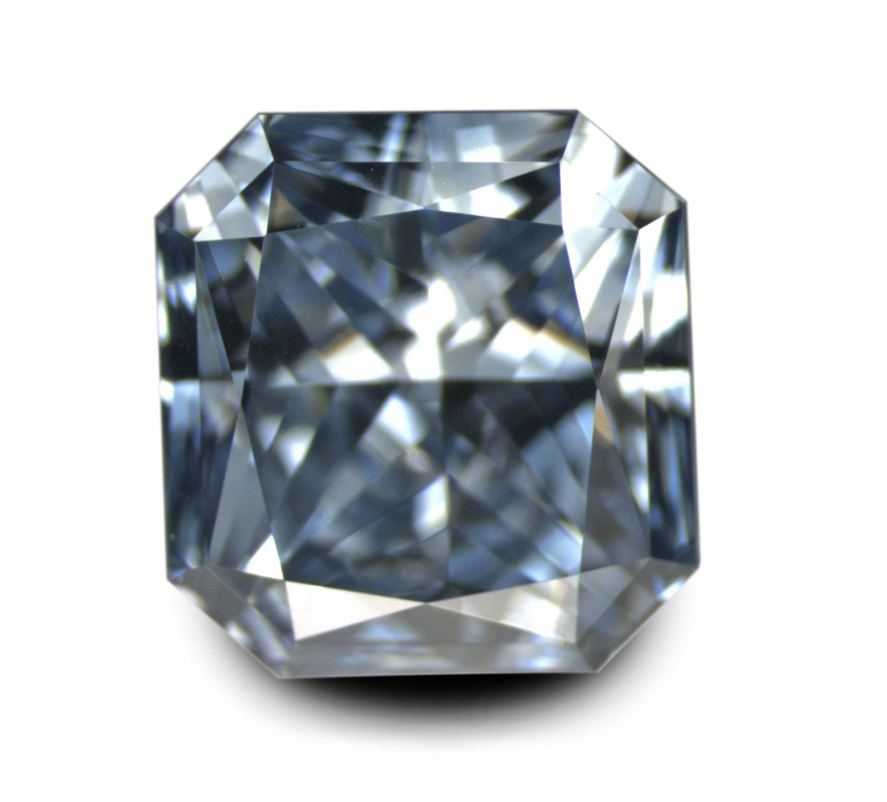
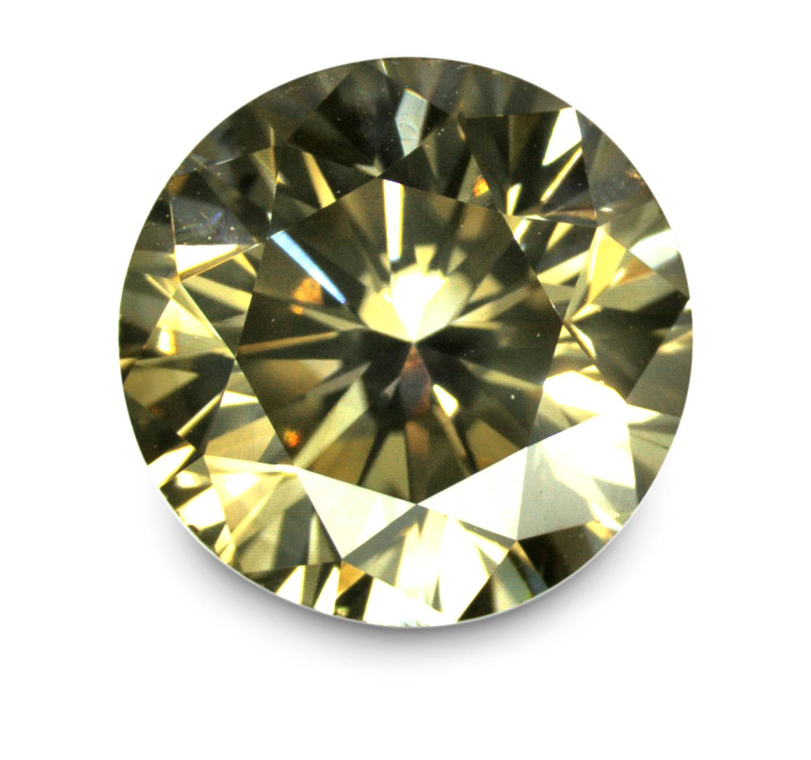

|
Quand un fifrelin micropoilesque change la couleur des diamants |
La difference - ce sont les impuret�s...
|
 Diamant Parfait (sans couleur) |
 Diamant Type Ib |
|
 Diamant Type IIb synthetique |
 Diamant riche en hydrog�ne et nickel |
Cliquez sur une image pour voir sa structure mol�culaire � droite.
Institut des Mat�riaux Jean Rouxel (IMN) et GemNantes, Nantes
Images copyright Thomas Hainschwang 2009
Contrairement a beaucoup d'autres mat�riaux, par exemple la plupart des oxydes, la couleur du diamant est souvent caus�e par des tr�s faibles teneurs en impuret�, souvent de l'ordre de la partie par million (ppm). par ex, un ppm de bore donne un diamant bleu d'un carat d�j� bien fonc�!!